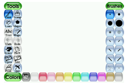
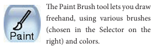
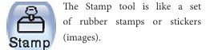
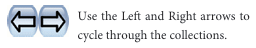
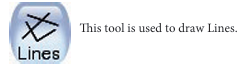
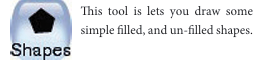
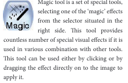
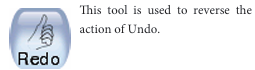
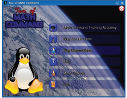
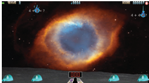

After learning this lesson, the students will be able to
In this chapter, the students will learn to use the software Tux Paint and Tux Math.
Tux Paint is a free drawing program designed for young children. It has a simple, easy-to-use interface, fun sound effects, and an encouraging cartoon mascot which helps to guide children as they use the program.
Choose a Tool from the options on the left side of the screen. Then, make choices from the right side of the screen. Directions are provided at the bottom of the screen.
When Tux Paint first loads, a title or credits screen will appear. Once loading is complete, press a key or click on the mouse to continue. (Or, after about 30 seconds, the title screen will go away automatically.)

The main screen is divided into following sections,
Left Side, Toolbar,
This toolbar has the control options to draw and to edit images.
Middle, Drawing Canvas,
This is the largest part of the screen dedicated to draw and edit images.
Right Side, Selector,
When a tool is selected from the left side tool bar, the right side bar will display the options associated with the specific tool. (Example, When the line tool is selected, the right side bar shows the various lines available. When the shape tool is selected, different shape options can be seen on the right side.)
Lower, Colors,
A palette of available colors are shown near the bottom of the screen.
Bottom, Help Area,
At the very bottom of the screen, Tux, the Linux Penguin, provides tips and other information while you draw.
Tools Icons






Magic tool is a set of special tools, selecting one of the ‘magic’ effects from the selector situated in the right side. This tool provides countless number of special visual effects if it is used in various combination with other tools. This tool can be used either by clicking or by dragging the effect directly on to the image to apply it.

Tool Name |
Keyboard Shortcut Key |
Tool name, New |
Keyboard Shortcut Key, Control plus N |
Tool name, Open |
Keyboard Shortcut Key, Control plus O |
Tool name, Save |
Keyboard Shortcut Key, Control plus S |
Tool name, Print |
Keyboard Shortcut Key, Control plus P |
Tool name, Quit |
Keyboard Shortcut Key, Escape key |
Tool name, Undo |
Keyboard Shortcut Key, Control plus Z |
Tool name, Redo |
Keyboard Shortcut Key, Control plus Y |
Table ends.
Tux Math
Tux Math is an open source arcade style video game for learning arithmetic. The main goal is to make learning effective and fun.
Tittle Screen

Math Command Training Academy, choose this to go to a list of over fifty prepared lessons, starting with simple typing of single digit numbers, and progressing to multiplication and division involving negatives and "missing number" questions (example, "minus 17 into question mark is equal to 119"). The player wins if the question list is completed successfully. Successfully completed lessons are indicated with a flashing gold star.
Play Arcade Game

This option can be used to select and play one of the four open ended “arcade style” games, meaning the game gets faster and faster as long as the player can keep up, with the goal to get the highest score possible.
The options include,
Play Custom Game
This option can be used to play a game based on the config file in the player’s home directory.
More Options
These options have "Demo" mode as well as credits and project information.
Keys
• Use the [UP] and [DOWN] arrow keys to select what you wish to do, and then press [ENTER or RETURN or SPACEBAR]. Or, use the mouse to click the menu item.
• Pressing [ESCAPE] will quit the program.
1 Tux paint software is used to DASH
a) Paint
b) Program
c) Scan
d) PDF
2. which toolbar is used for drawing and editing controls in tux paint software?
a) Left Side, Toolbar
b) Right side, Toolbar
c) Middle, Tool bar
d) Bottom, Tool bar
3. What is the shortcut key for undo option?
a) Control plus Z
b) Control plus R
c) Control plus Y
d) Control plus N
4. Tux Math software helps in learning the dash
a) Painting
b) Arithmetic
c) Programming
d) Graphics
5. In Tux Math, Space cadet option is used for dash
a) Simple addition
b) Division
c) Drawing
d) Multiplication
1. What is Tux Paint ?
2. What is the use of Text Tool ?
3. What is the Shortcut key for Save option?
4. What is Tux Math?
5. What is the use of Ranger ?
Animal Cell |
விலங்கு செல் |
Vilangu cell |
Battery |
மின்கல அடுக்கு |
Minkala adukku |
Binomial |
இருசொல் பெயர் |
Irusol peyar |
Boiling |
கொதித்தல் |
Kothiththal |
Cell |
மின் கலன் |
Min kalan |
Conventional current |
மரபு மின்னோட்டம் |
Marabu minnottam |
Conductors |
கடத்திகள் |
Kadthikal |
Conductivity |
கடத்து திறன் |
Kadathu thiran |
Corals |
பவளங்கள் |
Pavalangal |
Classification |
வகைப்பாடு |
vakaippaadu |
Chloroplast |
பசுங்கணிகம் |
Pasunganigam |
Chromoplast |
வண்ணக்கணிகம் |
Vannakkanigam |
Cell wall |
செல் சுவர் |
Cell suvar |
Contraction |
சுருங்குதல் |
Surunguthal |
Condensation |
ஆவி சுருங்குதல் |
Aavi surunguthal |
Crystalization |
படிகமாக்கல் |
Padigamaakkal |
Curdling |
பால் உறைந்து தயிராதல் |
Paap urainthu thayiraathal |
Diaphragm |
உதரவிதானம் |
Uthara vithaanam |
Cry cell |
உலர் மின்கலன் |
Ular minkalan |
Dicotyledons |
இரு வித்திலைத்தாவரங்கள் |
Iru vithilai thaavarangal |
Electric current |
மின்னோட்டம் |
minnotam |
Electrical circuit |
மின்சுற்று |
Minsutru |
Endoplasmic reticulum |
எண்டோபிளாச வலைப்பின்னல் |
Endoplasa valai pinnal |
Expansion |
விரிவடைதல் |
Virivadaithal |
Fuse |
மின்உருகி |
Min urugi |
Flame cells |
சுடர் செல்கள் |
Sudar cellgal |
Freezing |
உறைதல் |
uraithal |
Fermentation |
நொதித்தல் |
nothithal |
Green gland |
பச்சை சுரப்பி |
Pachai surappi |
Heating effect |
வெப்ப விளைவு |
Veppa vilaivu |
Insulator |
காப்பான்கள் |
Kaappaankal |
Identification |
இனங்காணல் |
Inankkaanal |
Inverterates |
முதுகெலும்பற்றவை |
Mudhukelumbatravai |
Leucoplast |
வெளிர்கணிகம் |
Velirkanikam |
Magnetic effect |
மின்காந்தவிளைவு |
Minkaantha vilaivu |
Monocotyledons |
ஒரு வித்திலைத் தாவரங்கள் |
Oru vithilai thaavarangal |
Malpighian tubules |
மல்பீஜியன் நுண் குழல்கள் |
Malpigion nun kulalgal |
Microscope |
நுன்ணோக்கி |
Nunnokki |
Malleability |
தகடாகும் தன்மை |
Thagadagum thanmai |
Million |
பத்து லட்சம் |
Pathu latcham |
Nephridia |
நெப்ரீடியா |
Nephridia |
Nucleus |
உட்கரு |
Utkaru |
Non periodic change |
கால ஒழுங்கற்ற மாற்றம் |
Kaala olungatra maatram |
Oyster |
முத்துசிப்பி, கிளிஞ்சல் |
Muthu sippi |
Oviparous |
முட்டையிடுபவை |
Muttai yidubavai |
Organelle |
நுண் உறுப்பு |
Nun uruppu |
Parallel circuit |
பக்க இணைப்பு |
Pakka inaippu |
Parental care |
பெற்றோர் பாதுகாப்பு |
Petror paathukaappu |
Plant cell |
தாவர செல் |
Thaavara cell |
Plastids |
கணிகங்கள் |
kanigangal |
Plasmodesmata |
செல்களின் இணைப்புச் சவ்வு |
Selkalin inaippu savvu |
Periodic change |
கால ஒழுங்கு மாற்றம் |
Kaala olungu maatram |
Resistivity |
மின்தடை |
Min thadai |
Rusting |
துருப்பிடித்தல் |
Thuru pidiththal |
Series circuit |
தொடர் இணைப்பு |
Thodar inaippu |
Short circuit |
குறுக்கு சுற்று |
Kurukku sutru |
Specific resistance |
தன்மின்தடை |
Than minthadai |
Solenoid |
கம்பிச்சுறுள் |
Kambichurul |
Spicules |
முட்கள் |
Mutkal |
Stem cell |
மூலச்செல் |
Muulachel |
Taxonomy |
வகைப்பாட்டியல் |
Vakaipaattiyal |
Unicellular organisms |
ஒரு செல் உயிரினங்கள் |
Oru cell uyirinangal |
Viviparous |
குட்டி ஈனுபவை |
Kutti eenubavai |
Vernacular name |
வட்டார பெயர் |
Vattaara peyar |
Vertebrates |
முதுகெலும்புள்ளவை |
Mudhu kelumbullavai |
Viscosity |
பாகுத்தன்மை |
Paagu thanmai |
Vaporization |
ஆவியாதல் |
aaviyaathal |
Water vascular system |
நீர்க்குழல் மண்டலம் |
Neer kulal mandalam |